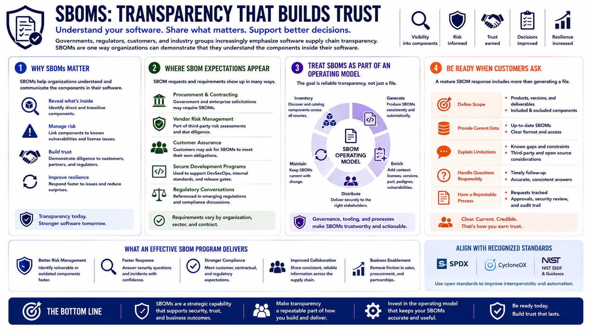

What Is SBOM?
Compliance and Regulatory Drivers
Connecting to LMS... Progress: in progress
Version 1.0 | Date: 2026-06-16 | Educational overview of Software Bill of Materials concepts.

Narration
Governments, regulators, customers, and industry groups increasingly emphasize software supply chain transparency. SBOMs are one way organizations can demonstrate that they understand the components inside their software.
SBOM expectations may appear in procurement, vendor risk management, customer assurance, secure development programs, or regulatory conversations. The exact requirements vary by organization, sector, and contract.
For procurement teams, an SBOM can support questions about third-party software. What components are included? Are there unsupported dependencies? How does the vendor manage vulnerabilities in supplied components?
For compliance and governance teams, SBOMs can provide evidence of software inventory practices and supply chain visibility. They can support broader programs that manage security, privacy, operational, or contractual risk.
For customers, SBOMs can improve transparency. A customer may not need every internal detail, but structured component information can help them evaluate risk and ask better questions.
SBOMs do not make trust automatic. Trust still depends on secure development practices, vulnerability management, incident response, vendor governance, documentation, and honest communication about risk.
Organizations should treat SBOM compliance drivers as part of a larger operating model. The goal is not simply producing a file, but maintaining reliable software transparency that supports decisions.
This is especially important when customers ask for SBOMs. A mature response includes clear scope, current data, a way to explain limitations, and a process for handling follow-up questions responsibly.